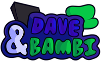

Hi, I am 480Aero, 15 year old that does stuff whenever I feel like it. Feel free to look around.

480 (pictured above), is the character that reprsents me.
About Me
I am a 15 year old teenager that does a lot of stuff that I can't really explain all at one. I compose music sometimes. Not that expirienced and all, but my most recent compositions are better than others. I also have an interest in coding, I do a decent job at learning the fundamentals of it all, but that alone is comfortable for me. I play around with electronics a lot. It's never anything too dangerous or ambitious, just those that can keep me busy for a while without doing much.
I do a lot of things regarding the interests I have, and it mainly comes in the form of modding. I modify a game or something along those lines and now the game has something or someone that was not originally in the game before. Most of the time, I do it by myself, but sometimes, I work with others to produce a mod together.
But in general, I do some cool things and I hope that continues way after high school. Feel free to DM me, as long as it is not spam.
Interests



I have interests other than those, but note that these are the main interests I have.
DNIs
DNIs are basically straightforward. Along with the basic forms of DNI, people who participate in illegal or adult media or behavior, along with those who bully, harass, or believe in spawnism, are suggested to not interact with me whatsoever.
Other things
- Born April 5, 2011
- Sophmore
- He/Him
- Straight